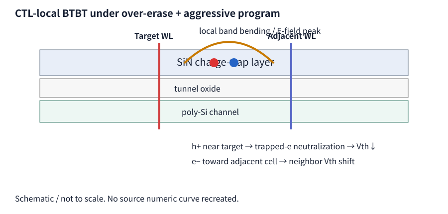
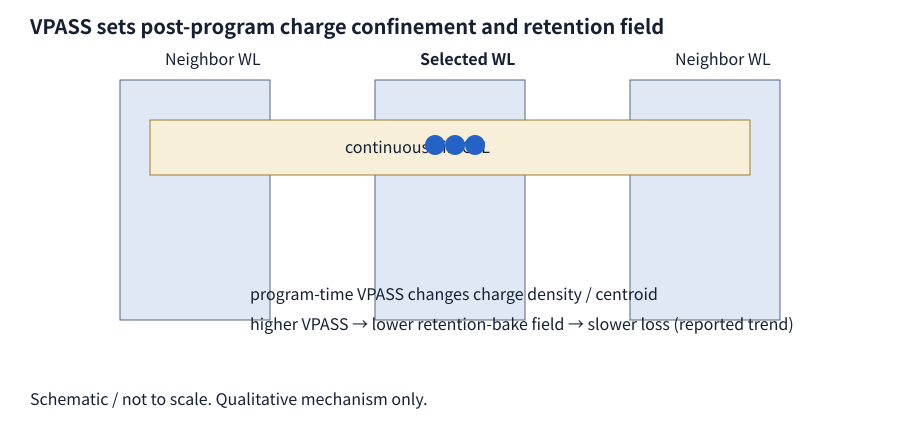
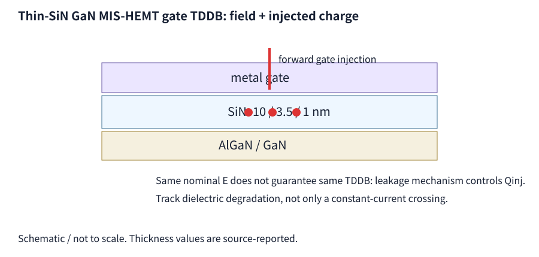
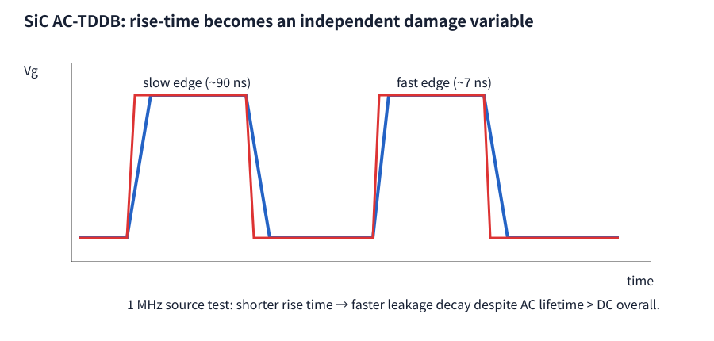
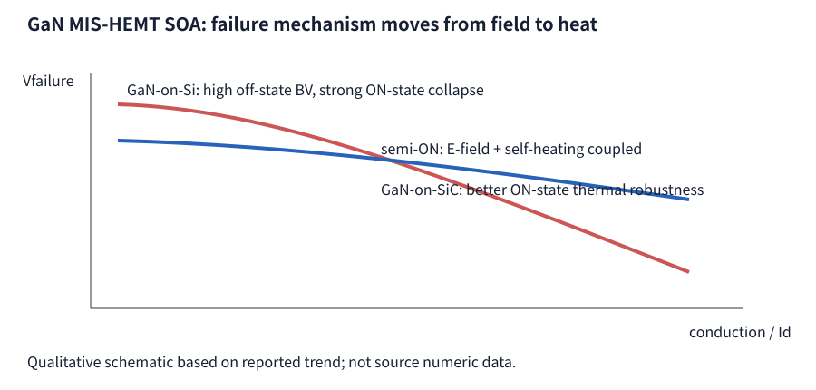

Executive Summary
W38은 reliability state variable을 V, T, cumulative stress time만으로 정의하기 어렵다는 점을 보여줍니다. CTL-local BTBT는 stored charge가 만든 field가 다시 carrier generation을 만들고, VPASS retention 연구는 같은 logical state라도 program waveform에 따라 microscopic trap occupancy가 달라질 수 있음을 보여줍니다. HV에서는 GaN gate TDDB의 injected-charge dependence, SiC AC-TDDB의 rise-time dependence, GaN SOA의 electrothermal mechanism crossover가 같은 메시지를 줍니다.
| # | Topic | Reported novelty | Engineering value |
|---|---|---|---|
| 1 | CTL-local BTBT | Over-erase + VPGM up to 24 V; onset near 1.79 MV/cm; local JBTBT ~10^-26→10^-4 A/cm² | IVS / ISPP / neighbor interference separation |
| 2 | VPASS-controlled retention | Higher adjacent-WL VPASS lowers charge-loss rate and alters stretched-exponential kinetics | Program waveform as retention knob |
| 3 | Thin-SiN GaN TDDB | 10/3.5/1 nm SiN; field alone insufficient; injected charge matters | Qinj-based qualification |
| 4 | SiC AC-TDDB rise time | 1 MHz, 7-90 ns; faster edge accelerates leakage decay | Equal-HIGH-time boundary |
| 5 | GaN electrothermal SOA | GaN-on-Si higher off-state BV but larger ON-state collapse; SiC substrate better ON robustness | Mission-profile state mapping |
1. CTL-local band-to-band tunneling as an IVS/interference path

핵심은 E_CTL이 외부 bias만의 함수가 아니라 trapped charge가 Poisson equation을 통해 스스로 만드는 local field라는 점입니다. 따라서 final VTH가 같아도 program history와 neighbor state가 다르면 BTBT history가 달라질 수 있습니다. Source는 BTBT-generated charge가 band bending을 다시 완화해 self-limiting behavior도 만든다고 설명합니다.
Dominant parameters / scaling
Target-neighbor VTH contrast, erase depth, final VPGM, CTL bandgap/trap density, WL pitch와 CTL thickness가 지배적입니다. JBTBT의 exponential field sensitivity 때문에 pitch 또는 state scaling이 선형 degradation이 아니라 onset-like transition을 만들 수 있습니다.
Competing mechanism / signatures
Shallow-trap detrapping과 conventional lateral migration이 주요 경쟁 메커니즘입니다. BTBT라면 high-VPGM/large-pattern-contrast에서 target VTH loss와 adjacent VTH shift가 상관되어 나타나야 합니다. 단순 detrapping이라면 temperature Arrhenius dependence는 강하지만 instantaneous target-neighbor field contrast 의존성은 상대적으로 약할 것입니다.
2. Adjacent-WL VPASS as a long-term retention state variable

여기서 βs는 Weibull slope가 아니라 broad microscopic time constants를 나타내는 stretched-exponential exponent입니다. VPASS가 τ, βs, ΔV∞에 영향을 준다면 단순 initial-VTH offset이 아니라 trap occupancy와 local field landscape 자체가 바뀌었다는 의미입니다.
Dominant parameters / competing mechanisms
Adjacent VPASS, selected/neighbor state, WL pitch, CTL thickness, program pulse count와 bake T가 중요합니다. 가장 먼저 배제해야 할 대안은 “higher VPASS가 단순히 initial VTH를 다르게 만들었다”는 설명입니다. t=0 VTH를 맞춘 후에도 retention slope 차이가 남는지 확인해야 합니다.
3. Thin-SiN GaN MIS-HEMT TDDB: field + injected charge

동일 E라도 gate leakage path와 carrier polarity가 다르면 Qinj와 defect-generation efficiency가 달라질 수 있습니다. Ultra-thin dielectric에서는 constant-current criterion 자체가 transport-regime transition과 true degradation을 혼동할 수 있어 intermediate IG-VG monitoring이 중요합니다.
Weibull / boundary
Thickness scaling은 percolation path length를 줄이고 β를 바꿀 수 있습니다. Forward/reverse polarity에서 η뿐 아니라 β가 달라진다면 단순 field acceleration보다 defect population change를 지지합니다. 반대로 matched-E data가 polarity와 무관하게 하나로 collapse한다면 field-dominant 해석이 강해집니다.
4. SiC MOSFET AC-TDDB: equal HIGH time is not enough when rise time changes

두 번째 식은 engineering model입니다. Dedge가 0이 아니면 동일 duty와 동일 cumulative HIGH time도 다른 결과를 냅니다. 이는 AC/DC equal-HIGH-time qualification에서 transition waveform을 별도 변수로 봐야 하는 boundary를 직접 제시합니다.
Competing mechanism / signatures
BTI/recovery, edge-induced hot-carrier-like injection, overshoot/ringing, measurement artifact를 분리해야 합니다. Source의 displacement-current compensation은 measurement artifact를 줄이지만, faster edge가 hard breakdown lifetime까지 같은 비율로 단축한다는 직접 증거는 아닙니다.
5. GaN MIS-HEMT electrothermal SOA mechanism crossover

Off-state에서는 trapping이 field screening을 통해 apparent BV를 높일 수 있지만, conduction이 증가하면 thermal impedance가 ranking을 지배합니다. 즉 “off-state BV가 더 좋은 process”가 실제 switching SOA에서도 더 좋은 것은 아닙니다.
Failure mode / Weibull
Off-state failure는 trap/field nonuniformity를, ON-state failure는 thermal spreading·contact/metallization variation을 더 강하게 샘플링할 수 있으므로 operating state를 섞어 하나의 Weibull population으로 fitting하는 것은 위험합니다. β와 failure location을 state별로 비교해야 합니다.
Cross-item synthesis & development priority
이번 주의 개발 우선순위는 P1 = HV gate stack의 equal-HIGH-time AC/DC + rise-time DOE, P2 = VNAND target-neighbor pattern × erase-depth × VPGM IVS map, P3 = matched-initial-VTH VPASS retention DOE입니다. 공통 목표는 stress와 user condition에서 같은 failure location, β, precursor, recovery, polarity dependence가 유지되는지 확인하는 것입니다.
Research Insight Layer — from weekly digest to Co-Scientist review
이 섹션은 5편을 다시 요약하지 않습니다. 각 논문의 claim을 적용범위와 함께 구조화하고, 서로 모순되거나 보완되는 지점을 찾아 다음 hypothesis와 falsification experiment로 연결합니다.
Claim–Evidence Model Cards
| Paper | Claim / evidence | Model | Validated range / boundary | Current status |
|---|---|---|---|---|
| CTL-local BTBT | Large target/neighbor charge contrast can create CTL band bending and BTBT-related target loss + neighbor interference. | JBTBT≈A·ECTL²exp(-B/ECTL) | Source TCAD: 9-WL string, aggressive ISPP to 24 V, onset field ~1.79 MV/cm. Product-specific material/pitch generalization is EXTRAPOLATION ONLY. | Equation/Evidence Agent; no universal tool parameterization yet. |
| VPASS-controlled retention | Program-time adjacent-WL VPASS changes post-program charge state and long-term retention kinetics. | Stretched exponential ΔVTH(t)=ΔV∞[1-exp(-(t/τ)^βs)] | Source establishes VPASS dependence, but this archive does not yet contain a complete cross-node valid-range table. Exact transfer to 400L is EXTRAPOLATION ONLY. | Resource/Evidence Agent. |
| Thin-SiN GaN TDDB | Field alone is insufficient; leakage mechanism / injected charge / polarity matter. | Qinj=∫|Jg|dt + field-acceleration model | Source thicknesses 10/3.5/1 nm; CVS emphasized for 10 and 3.5 nm. Translation to SiO₂/high-k VNAND is not direct. | Model candidate requires material-specific calibration. |
| SiC AC-TDDB | Equal HIGH-time does not guarantee equal degradation when rise time changes. | Dcycle≈∫high rDC dt + Dedge(dV/dt,ΔV,state) | 1 MHz, 7–90 ns rise time, two commercial devices. Dedge equation is Engineering Inference, not source-fitted law. | Hypothesis / DOE model only. |
| GaN electrothermal SOA | Off-state field/trap advantage can reverse in semi/on-state because self-heating dominates. | ΔTj≈Zth(t)·VDS·ID | GaN-on-Si vs GaN-on-SiC source structures. Direct quantitative transfer to Si HV-LDMOS requires separate Zth/avalanche calibration. | Mechanism-level translation only. |
Cross-Paper Contradiction Matrix
| Engineering question | Conventional simplification | W38 evidence that challenges it | What would resolve it? |
|---|---|---|---|
| 같은 electric field면 같은 damage인가? | Lifetime=f(E,T,t) | GaN thin-SiN TDDB: polarity/leakage/Qinj dependence; CTL: E itself depends on trapped charge state. | Matched-E + matched-Qinj + polarity/failure-location split. |
| 같은 final VTH면 같은 retention state인가? | VTH is a sufficient state variable | VPASS result suggests different microscopic occupancy/field state at matched logical state. | Match t=0 VTH and compare τ, βs, ΔV∞ over T. |
| 같은 cumulative HIGH time이면 AC/DC damage가 같은가? | Damage ∝ time-at-high-field | SiC rise-time dependence requires a possible edge/state term. | Same HIGH-time + varied rise time; check η, β, precursor and fail location. |
| Off-state BV ranking이 switching SOA ranking을 대표하는가? | Higher static BV ⇒ safer device | GaN substrate comparison shows electrothermal ranking can reverse toward ON-state. | Pulse-width × operating-state × Tj-proxy map. |
What changed our understanding?
1. Reliability state는 V/T/t만이 아니라 Qtrap, Qinj, waveform edge, local thermal state를 포함해야 합니다. 이번 5편은 서로 다른 구조에서 같은 방향의 반례를 제공합니다.
2. VNAND retention에서 final VTH는 충분한 state descriptor가 아닐 수 있습니다. program history가 trap occupancy와 internal field를 다르게 만들면 같은 VTH에서도 이후 kinetics가 달라질 수 있습니다.
3. CTL의 local BTBT와 lateral migration은 하나의 “retention loss”로 묶기보다 field/pattern-driven fast regime와 time/T/distance-driven transport regime로 분리해 phase map을 만드는 편이 더 유용합니다.
4. HV qualification에서는 field-only 또는 HIGH-time-only acceleration을 사용하기 전에 carrier injection과 transition waveform이 같은 mechanism을 유지하는지 확인해야 합니다.
New Testable Hypotheses & Falsification Plan
Priority DOE — mechanism phase map, not a single lifetime fit
Knowledge-base update
이번 W38 결과는 CTL / Retention, TDDB, HV SOA living mechanism pages에 반영했습니다. 앞으로 새 논문은 “이번 주 카드”에만 남지 않고, 기존 consensus/contradiction/domain boundary를 실제로 변경한 경우 해당 mechanism page의 현재 상태를 갱신합니다.
Technical & Figure QC Summary
PASS
PASS
PASS
PASS
PASS
0